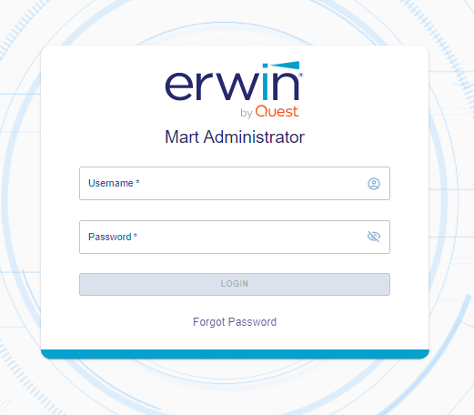

After the Mart is initialized, the user who initialized must log in first.
If you enter an incorrect password five consecutive times, your account will be locked for five minutes (300 seconds) by default. You can change the time for which the account stays locked as follows:
The erwin Mart Configuration dialog appears.
When you log in to Mart for the first time, configure it per the requirements of your organization. You can configure the following settings:
Follow these steps:
The erwin Mart Administrator home page appears. If you have implemented SSL, HTTPS appears in the address bar.

Specifies the profile that is assigned to a user on a model. This profile is assigned whenever a user creates a model and saves it to Mart for the first time. The user inherits the permissions of the default profile selected here on the model that is saved. For example, suppose that User1 is assigned with Modeler profile and the System Administrator selects Architect as the default profile for model creator. If User1 creates Model1 and saves it to Mart, for Model1, User1 inherits the permissions of Architect. Now, suppose that the System Administrator selects Viewer as the default profile for model creator, and suppose that User1 creates Model2 and saves it to Mart. For Model2, User1 inherits the permissions of Viewer.
Select the No default profile option if you do not want to assign any default profile to a user.
Specifies the name of the SMTP host. Enter the name in the mail.domain.com format. Notification emails are sent from this server.
Specifies the port number of the SMTP server. The default port number is 25. If your company is using an alternate port number for the mail server, specify that port number.
Specifies whether transactions with the SMTP server are authenticated. Select the check box to authenticate.
Specifies the user name to authenticate the SMTP server. Select the Authenticate check box to enable authentication.
Specifies the password to authenticate the SMTP server. Select the Authenticate check box to enable authentication.
Specifies the email ID of the Mart administrator. Notifications to Mart users are sent from this ID.
Specifies the email ID from which administrative emails such as the password reset email are sent.
Specifies whether transactions with the SMTP server use a Transport layer Security (TLS). If you intend to use a TLS connection, ensure that the User name and Administrator email correspond to each other.
Select this option only if you want to use a TLS connection.
Mart options are configured.
You have installed and configured erwin DM Mart.
If SMTP server is not configured, an Administrator can reset a user's password manually via the Users Page. On the Users page, select a user and click . Enter a new password and click Submit.
This information applies to Oracle 12c.
You can use the pluggable database concept of Oracle 12c and create multiple Marts of the same Mart release in a single Oracle instance. For example, you can create two pluggable databases erwin_test and erwin_production in an Oracle global database erwin. You can configure these databases with the Mart Server one after the other and connect to one of them at a time.
Follow these steps to use multiple pluggable databases: